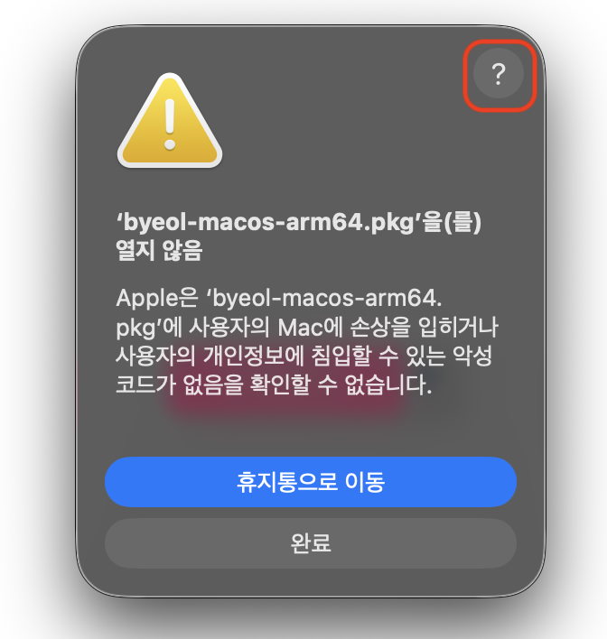
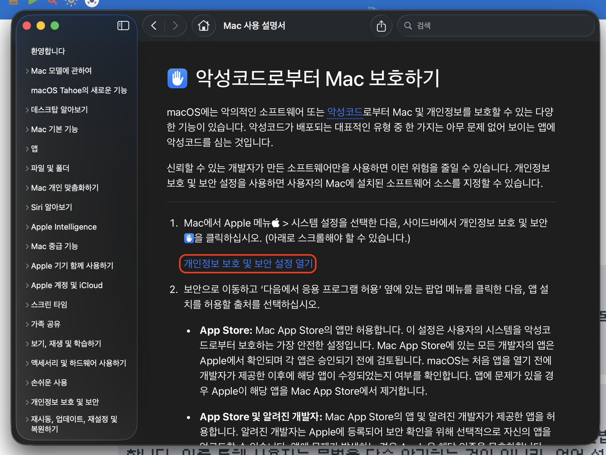
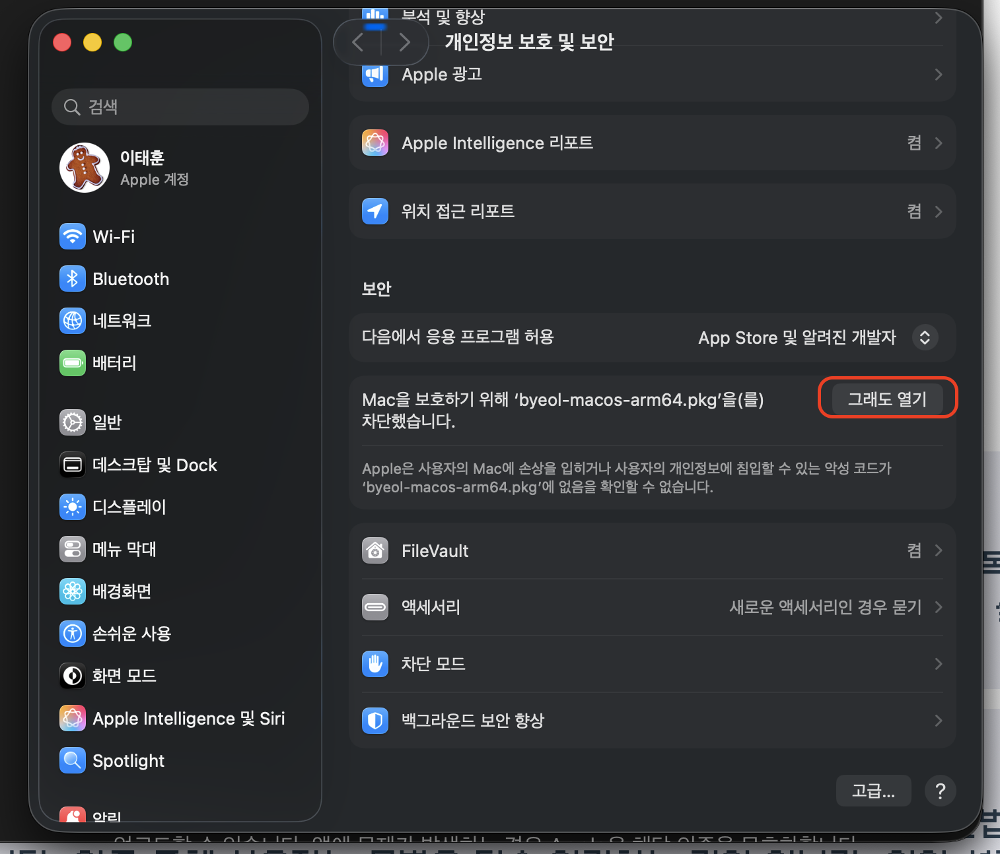

Byeol은 64비트 운영체제에서만 동작합니다. Mac OS의 경우 Apple Silicon만 정식으로 지원하며, Intel 기반 Mac을 포함하여 타 OS는 직접 빌드해야 합니다. 간단한 코드를 테스트하고 싶다면 설치 없이 웹상에서 실행해볼 수 있습니다.
릴리즈 페이지에서 가장 위에 있는 버전이 최신 버전입니다. Assets에서 운영체제에 맞는 파일을 다운로드하면 됩니다.
제공되는 파일은 다음과 같습니다. -macos-arm64.pkg은 Apple Silicon용 64비트 Mac OS 설치 pkg이며, -ubuntu-x64.deb는 64비트 우분투용 패키지 파일입니다. -wasm.zip은 WASM 바이너리로 WASM과 WASM을 읽기 위한 json 파일만 제공됩니다. Windows 사용자는 -win-x64.msi 설치 파일을 사용하는 것이 권장되며, 설치가 필요 없는 portable 버전인 -win-x64-portable.zip도 제공됩니다.
.msi 설치 파일을 실행하여 설치를 진행합니다. 설치가 완료되면 환경변수에 byeol 프로그램이 자동으로 추가됩니다. 터미널을 열어 byeol --version 명령을 실행해서 설치가 정상적으로 완료되었는지 확인할 수 있습니다. -portable.zip 버전의 경우에는 환경변수 등록과 같은 절차가 수행되지 않으므로, 압축을 푼 폴더에서 직접 실행해야 합니다.
.deb 파일을 다운 받아 다음 shell 명령어로 설치합니다.
설치 완료 후 byeol --version을 입력해서 정상적으로 설치되었는지 확인합니다.
macos-arm64.pkg 로 설치를 진행하세요.
설치가 차단된다면 당황하지 마세요! '시스템 설정 > 개인정보 보호 및 보안'에서 그래도 허용을 누르면 설치가 진행됩니다.
  
매년 맥 개발자 등록비용을 내지 않은 경우, pkg에 서명하지 않아 뜨는 메시지일뿐 악성코드는 없습니다. 이후 터미널을 켜서 byeol --version을 입력해 정상적으로 실행되는지 확인합니다.
WASM 버전을 사용하려면 추가적인 코드가 필요합니다. 실제로 website를 만들 때 사용하고 있으므로, 예시가 필요하다면 해당 코드를 참고하세요.
byeol은 기본적으로 CLI 환경으로 제공됩니다. 터미널에서 실행해야 하죠. byeol -h 명령을 통해 사용 가능한 모든 옵션을 확인할 수 있습니다.
기본적으로 .byeol 파일에 대한 경로를 입력해서 해당 코드를 실행할 수 있습니다.
혹은 폴더 경로를 지정하면 알아서 하위 폴더를 싹 뒤져서 .byeol 파일을 모두 실행합니다.
wildcard도 지원하니 적극적으로 사용해주세요.
만약 모든 하위폴더가 아니라 세세하게 폴더를 제어해서 소스코드를 실행하고 싶다면, 본격적으로 manifest를 선언해서 당신 만의 pack 을 만들어야 합니다.
‘-s ’<byeol 코드>'를 사용하면.byeol` 파일 필요 없이 cli 환경에서 직접 코드를 입력해서 실행할 수 있습니다.
-v 옵션을 주면 파싱/검증 과정에서 발생하는 상세 로그를 확인할 수 있습니다.
-S 혹은 --show-structure 옵션을 사용하면 파싱 후의 AST 구조를 CUI로 표현합니다.
위 로그의 각 값에 대한 상세 정보는 레퍼런스 가이드에서 아키텍쳐와 설계를 참고하세요.
--version 옵션을 사용하면 현재 byeol 바이너리의 버전과 빌드 정보가 표시됩니다.
위 예시처럼 버전(0.2.10), 빌드 날짜(Nov 04 2025), 빌드 카운트(1378), git commitId(5ae19ea79), 바이너리 타입(Debug or Release) 등이 표시됩니다.
다음 문서: 디자인 철학